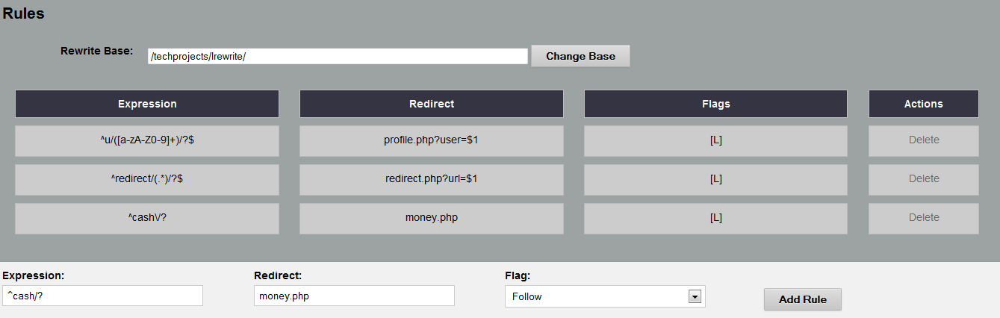

Created: 30/1/2012
By: LinkoDev
Email: linkodev@gmail.com
Thank you for purchasing this script. If you have any questions that are beyond the scope of this help file, please feel free to email via my user page contact form here. Thanks so much!

With this Mod_Rewrite Simulator you can:
Easily transform ugly, cryptic URLs into what are known as "friendly URLs"
Whether you're a small business or a large brand, Leadership board fan page app provides a simple and effective way to promote your page.
Manage all your URLs from one single location
With this application, you don't need to open your .htaccess file to add a new re-rewrite rule. You can add and modified your URLs from a nice control panel.
Manipulate and test your URLs on the fly
You can manipulate and test your URLs without going through the regors of uploading .htaccess files for each re-write manipulation.
Make your website more search engine friendly
Even better: http://example.com/user/Joe/Not only is the above link easier on the eyes, it's also possible for search engines to extract semantic meaning from it. This basic kind of URL rewriting is one way that Mod_rewrite Simulator is used.
Make your website more secure by transforming your URLs
http://example.com/user.php?id=AHHHHHHGiven the same example, imagine the following attack on the user id. In the first example, the PHP script is explicitly being invoked and must handle the invalid id number. A poorly written script would likely fail, and, in a more extreme case (in a poorly written web application), bad input could cause data corruption. However, if the user is only ever shown the friendlier URLs. they would never know that the user.php page existed.
>http://example.com/user/AHHHHHH/
Features
AdminBased Rewrite Simulator is very easy to install and use. These are the steps that you need in installing this component.
Note: If your website is in another Directory (Subfolder), please ensure that you add the name of your directory to the ErrorDocument 404 path to reflect the subfolder as show below
ErrorDocument 404 /DirectoryName/adminrewrite/rewrite.php
// Admin Security $sUsername = 'admin'; $sPassword = 'admin';
Note: If you installed this in a subfolder either than your root folder. Add the name of the folder with a foward slash in front of it as show below.
/DirectoryName/
As mentioned above you can manage your URLs settings from the admin panel.
After loggin into the admin panel. Ensure that the Rewrite Base is having the foward slash "/".Note: If you installed this in a subfolder either than your root folder. Add the name of the folder with a foward slash in front of it as show below.
/DirectoryName/
1. Expression: This is where you insert your regular expressions. A regular expression is basically a small piece of code that checks for patterns. The pattern can range from a single character that matches to absolutely everything. In the example above, the Expression Pattern iscash money.php [L]
cash. In this version, we have built the Regular Expressions that is normally encountered in web projects into our Rewrite Class. In that case, you don't have to worry about any regular expression. As stated above,
money.php3.Flag: "Flags", tell Apache how to apply the rule. In the above example, the flag is
L. This stands for Last rule. Meaning as soon as this flag is read, no other following rules are processed. Important Note In this new version, there are predefined regular expressions bulit into our rewrite engine. Supported named expression are;
blog/view/:int:/You can find more information about regular expression and mod_rewrite here. http://httpd.apache.org/docs/2.0/misc/rewriteguide.html If you don't know regular expressions here are some useful tutorials that will bring you up to speed quickly.
v1.0 (21/01/2012) * Initial version released
v1.1 (30/01/2012) * Added built in Regular Expressions
Updates and new release of the script are free to download once you have bought this item. To download a new version you go to My Account on Codecanyon and
Right now I'm simply getting more emails and requests for support than I can manage in a timely manner. Some times I can answer emails the same day, but often it'll take me as long as a month (or longer!) to completely empty my inbox.
Before sending a support request make sure that you have done the following things:
To be able to help solve a problem quickly, please read the entries below. I'll do my best to assist you. I provide a full range of Support except:
I have released a lot of other cool and handy scripts, so make sure to checkout our other scripts. To get an overview you can take a look at our portfolio on Codecanyon.
Once again, thank you so much for purchasing this app. As I said at the beginning, I'd be glad to help you if you have any questions relating to this app. No guarantees, but I'll do my best to assist. If you have a more general question relating to the items on CodeCanyon, you might consider visiting the forums and asking your question in the "Item Discussion" section.
Gtech Team